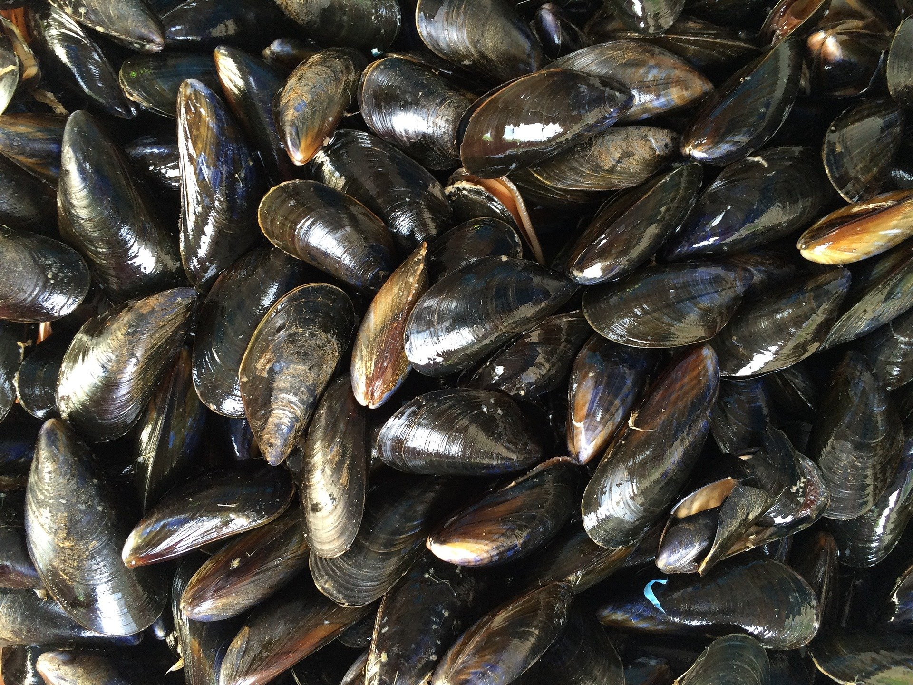

홍합
이매패류(부족류)에 속하며 일명 참담치라고도 부른다. 학명은 Mytilus coruscus GOULD이다. 형태는 장란형으로서 각정(殼頂) 쪽으로 가면서 좁아지고 뒤쪽으로 가면서 넓어지며 각정은 전단에 있고 뾰족하다.
조가비의 겉면은 흑색이나 때로는 갈색으로서 광택이 있는 두터운 각피로 덮여 있고, 성장선은 크고 확실하다. 조가비의 안쪽은 강한 진주광택이 있으나 연변부(緣邊部)는 광택이 없는 흑갈색이고, 조가비는 두텁고 단단하다. 크기는 각장 80㎜, 각고 140㎜, 각폭 55㎜가 되는 대형 종이다.
분포범위가 넓어 우리나라의 전연안에서 볼 수 있으나 남해안에 많다. 서식장은 해수비중이 높은 고함수역(古鹹水域)인 외양에 면해 있는 연안의 암초지대이고, 여기에 족사(足絲)로써 부착하여 생활한다. 서식 수심은 조간대의 저조선(低潮線) 부근에서부터 수심 40m 되는 곳까지이나, 수심이 5∼10m 되는 곳에 많이 살고 있다.
홍합은 난생형으로서 산란기인 봄에 산란한 알을 해수 중에서 수정한 다음, 발생하여 3∼4주일간 부유생활을 하고 곧 부착생활로 들어간다. 부착은 수심이 얕은 곳에 있는 암초 등에 부착하지만, 성장에 따라 점차 깊은 곳으로 이동해 간다.